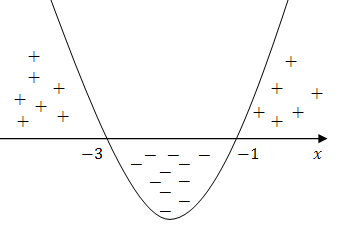

Metoda
Metodę rozwiązywania nierówności kwadratowej można zapisać w czterech krokach:
- wszystkie wyrazy przenosimy na lewą stronę nierówności, tak aby
po prawej zostało tylko \(0\),
- lewą stronę nierówności traktujemy jako wzór funkcji kwadratowej,
- wyznaczamy miejsca zerowe tej funkcji kwadratowej (o ile
istnieją) i szkicujemy jej wykres,
- odczytujemy z wykresu rozwiązanie nierówności.
W poniższym nagraniu wideo znajdziesz dokładne omówienie metod rozwiązywania
nierówności kwadratowych. Zostały tam przedstawione wszystkie możliwe typy nierówności kwadratowych
oraz sposoby ich rozwiązywania.
Na filmie pokazuję wszystkie możliwe typy nierówności kwadratowych oraz sposoby
ich rozwiązywania.
Czas nagrania: 27 min.
Algorytm rozwiązywania nierówności kwadratowych został omówiony również na poniższych
przykładach.
Rozwiąż nierówność \(x^2 + 4x + 3 \lt 0\).
Lewą
stronę nierówności traktujemy jak funkcję kwadratową: \[f(x) = x^2 + 4x + 3\] Wyznaczamy miejsca
zerowe tej funkcji. Najpierw liczymy deltę: \[ \Delta = 4^2 - 4 \cdot 1 \cdot 3 = 16 - 12 = 4 \]
Czyli: \[\sqrt{\Delta} = 2\] Zatem miejsca zerowe, to: \[\begin{split} x_1=\frac{-b-\sqrt{\Delta
}}{2a}=\frac{-4-2}{2\cdot 1}=-3\\[6pt] x_2=\frac{-b+\sqrt{\Delta }}{2a}=\frac{-4+2}{2\cdot 1}=-1
\end{split}\] Teraz szkicujemy wykres paraboli: 
Ramiona paraboli będą skierowane do góry, ponieważ współczynnik liczbowy przy
\(x^2\) jest dodatni.
Z rysunku odczytujemy, że parabola przyjmuje wartości mniejsze
od zera dla: \[x \in (-3, -1)\]
Rozwiąż nierówność \(x^2 + 4x + 3 \le 0\).
Ten przykład różni się
od poprzedniego jedynie znakiem nierówności. W tym przypadku rozwiązaniem są te wszystkie
\(x\)-y dla których parabola jest ujemna lub równa zero, czyli: \[x \in \langle -3, -1\rangle \]
Rozwiąż nierówność \(x^2 + 4x + 3 \gt 0\).
Ten przykład różni się
od poprzedniego jedynie znakiem nierówności. W tym przypadku rozwiązaniem są te wszystkie
\(x\)-y dla których parabola przyjmuje wartości dodatnie, czyli: \[x \in (-\infty ,-3)\cup
(-1,+\infty ) \]
Rozwiąż nierówność \(x^2 + 4x + 3 \ge 0\).
Ten przykład różni się
od poprzedniego jedynie znakiem nierówności. W tym przypadku rozwiązaniem są te wszystkie
\(x\)-y dla których parabola jest dodatnia lub równa zero, czyli: \[x \in (-\infty ,-3\rangle
\cup \langle -1,+\infty ) \]
W następnym rozdziale znajdziesz wiele przykładów na rozwiązywanie nierówności kwadratowych.